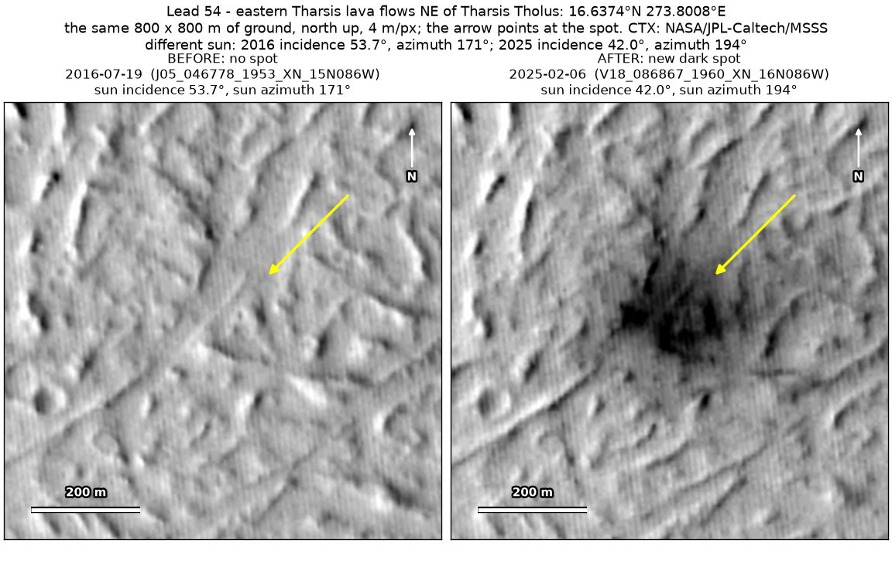
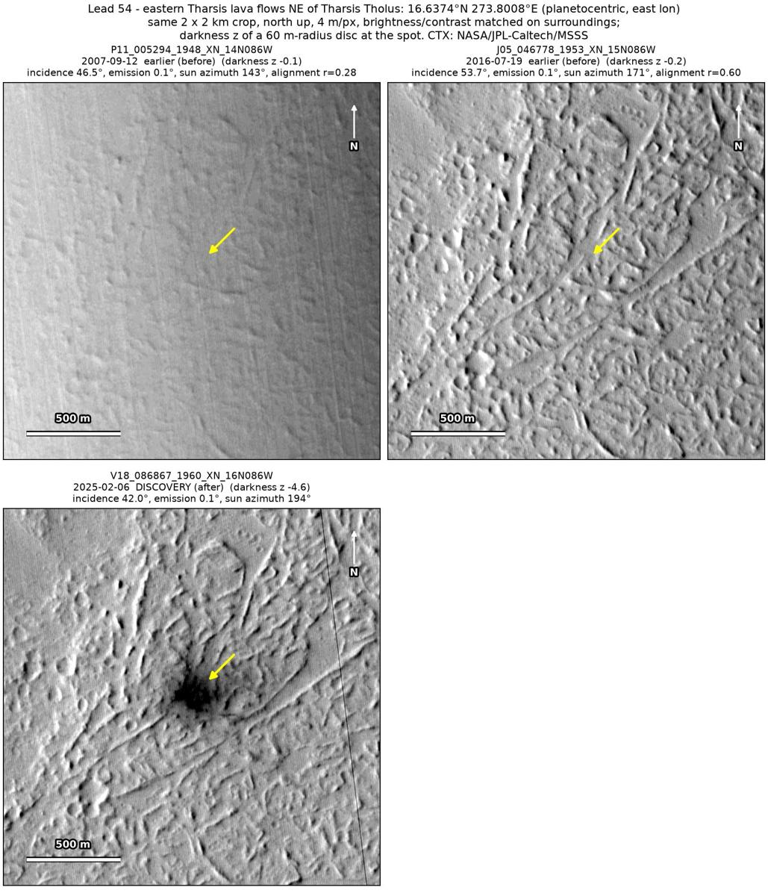
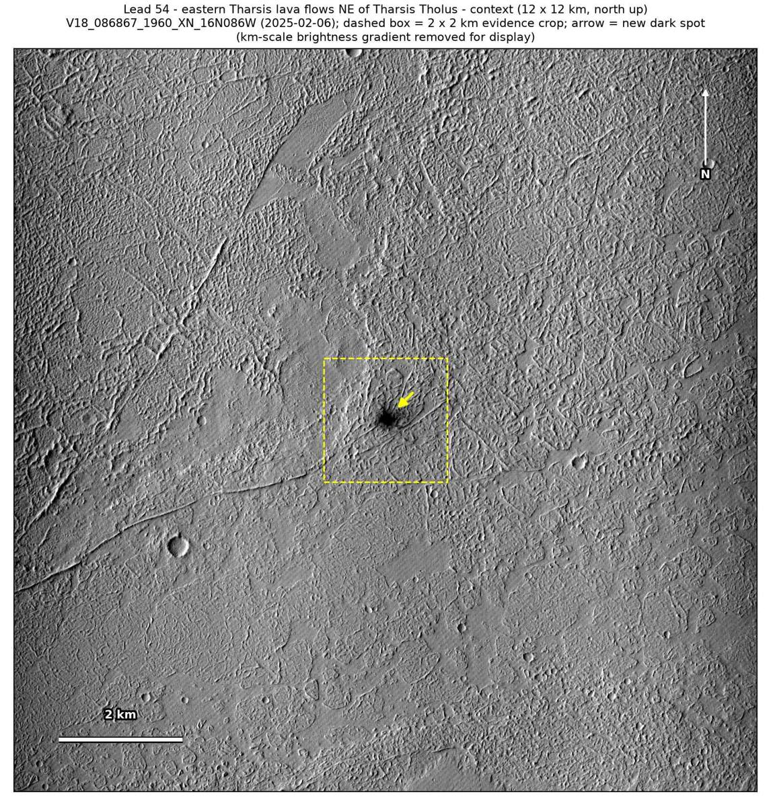

Professor of Mathematics
Paata Ivanisvili
Department of Mathematics, University of California, Irvine

← Possible new impact sites on Mars
Candidate 54: Eastern Tharsis lava flows north-east of Tharsis Tholus
Promising · roughly 50%

What changed. A diffuse dark patch about 200 to 300 m across, with darker blotches about 100 m across at its centre, appeared over the ridged surface of lava flows north-east of Tharsis Tholus, between July 2016 and February 2025, in one CTX image so far.
Why it may be a new impact. The July 2016 image shows no patch there, while a dark feature 200 m to the north shows in it; an earlier image, from September 2007, is hazed by a dust storm. A new dark patch with a darker centre, laid over the lava ridges, may be the blast zone of a small new impact; its size and sharpness make a cloud shadow unlikely.
- Location
- 16.637° N, 273.801° E (86.199° W)
- Absent
- 12 September 2007 and 19 July 2016
- Present
- 6 February 2025
- Size
- Diffuse dark patch about 200 to 300 m across, with a darker centre about 100 m across
- Confidence
- Promising candidate; roughly 50% that it is a new impact.
- Caveat
- Only one image shows it, so a cloud shadow, though unlikely, cannot yet be ruled out, and darker ground exposed by the wind fits this diffuse patch nearly as well as an impact. It lies outside every footprint of the high-resolution HiRISE camera; the nearest ends 54.0 km away. Like every candidate here, it is unconfirmed: see the caveat.

